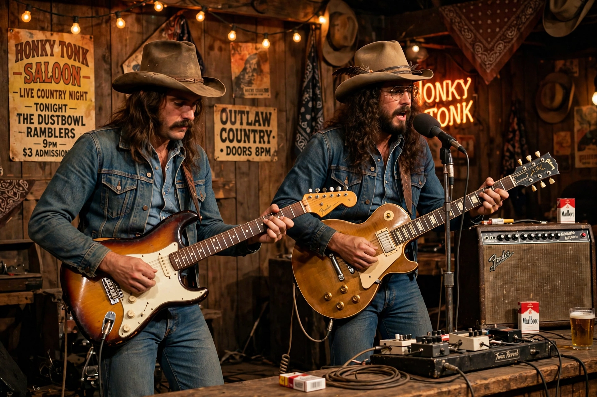

Outlaw country
From Wikipedia, the free encyclopedia
| Outlaw country | |
| Other names | Outlaw movement, progressive country |
|---|---|
| Stylistic origins | Honky-tonk, rockabilly, folk, rock and roll, Bakersfield sound |
| Cultural origins | Late 1960s–early 1970s, Nashville and Austin, United States |
| Key figures | Waylon Jennings, Willie Nelson, David Allan Coe, Hank Williams Jr., Merle Haggard |

The outlaw movement took country music back to its honky-tonk roots
Outlaw country is a subgenre of American country music, most popular during the 1970s and early 1980s, sometimes referred to as the outlaw movement or progressive country. The movement centred on artists who resisted the slick production and creative control of the Nashville establishment, insisting on recording their own material with their own bands.
Origins
By the late 1960s the polished "Nashville sound" dominated country radio. Artists such as Waylon Jennings and Willie Nelson grew frustrated with producers choosing their songs and session musicians. Nelson retreated to Austin, Texas, where a young audience mixing hippies and traditional country fans embraced a rawer sound; Jennings negotiated unprecedented artistic freedom from RCA. Albums such as Jennings's Honky Tonk Heroes (1973), written largely by Billy Joe Shaver, defined the new style.
Mainstream success
The movement reached commercial peak with the 1976 compilation Wanted! The Outlaws, featuring Jennings, Nelson, Jessi Colter and Tompall Glaser — the first country album certified platinum. The name derived partly from marketing and partly from the artists' cultivated image of long hair, denim and songs about drinking, rambling and defiance of authority. Other leading figures included David Allan Coe, Hank Williams Jr., Merle Haggard, Johnny Paycheck, and Kris Kristofferson.
Style and themes
Musically, outlaw country favoured stripped-down honky-tonk instrumentation, prominent electric guitar, and a rock-influenced backbeat. Lyrically it explored outlaw mythology, working-class life, drinking and heartache with a candour Nashville had suppressed. The movement waned in the early 1980s with the rise of the urban cowboy trend, but its insistence on artistic self-determination permanently changed country music, and it has been repeatedly revived by later singer-songwriters.